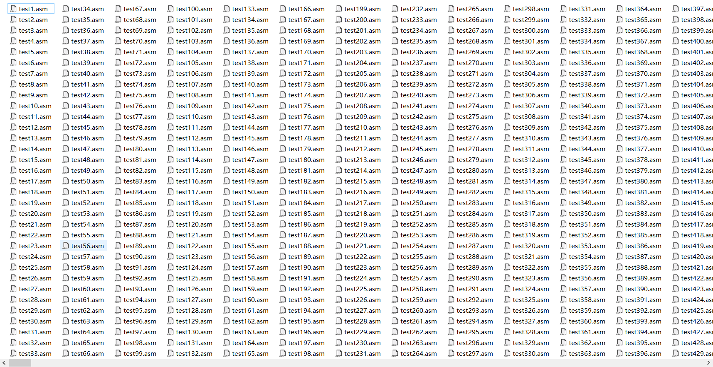

复杂流水线CPU设计文档（Verilog）
CPU设计方案综述
总体设计综述
使用Verilog开发一个流水线CPU,总体概述如下：
1.此流水线CPU为32位CPU
2.此CPU为流水线设计
3.此CPU支持的指令集为:{add,sub,and,or,slt,sltu,addi,andi,ori,lb,lh,lw,sb,sh,sw,mult,multu,div,divu,mfhi,mflo,mthi,mtlo,beq,bne,lui,jal,jr,nop}
4.nop的机器码为0x0000000
5.add，sub不支持溢出
关键模块定义
IM(外置)
（1）端口说明
| 序号 | 信号名 | 方向 | 描述 |
|---|---|---|---|
| 1 | i_inst_addr[31:0] | I | 需要进行取指操作的流水级 PC（一般为 F 级） |
| 2 | i_inst_rdata[31:0] | I | i_inst_addr 对应的 32 位指令 |
| 3 | reset | I | 复位信号 |
| 4 | clk | I | 时钟信号 |
（2）功能定义
| 序号 | 功能 | 描述 |
|---|---|---|
| 1 | 取指 | 利用PC取出对应位置处的指令 |
F_PC
（1）端口说明
| 序号 | 信号名 | 方向 | 描述 |
|---|---|---|---|
| 1 | NPC[31:0] | I | 下一个PC值 |
| 2 | CLK | I | 时钟信号 |
| 3 | RESET | I | 复位信号 |
| 4 | PC[31:0] | O | 当前PC值 |
（2）功能定义
| 序号 | 功能 | 描述 |
|---|---|---|
| 1 | 更改PC值 | 利用NPC更改PC值 |
D_GRF
（1）端口说明
| 序号 | 信号名 | 方向 | 描述 |
|---|---|---|---|
| 1 | A1[4:0] | I | 5位地址输入信号，指定32个寄存器中的一个，将其中存储的数据读出到RD1 |
| 2 | A2[4:0] | I | 5位地址输入信号，指定32个寄存器中的一个，将其中存储的数据读出到RD2 |
| 3 | A3[4:0] | I | 5位地址输入信号，指定32个寄存器中的一个，将其作为RD的写入地址 |
| 4 | WD[31:0] | I | 32位写入数据 |
| 5 | PC[31:0] | I | 当前PC值 |
| 6 | RD1[31:0] | O | A1指定寄存器的32位数据 |
| 7 | RD2[31:0] | O | A2指定寄存器的32位数据 |
| 8 | CLK | I | 时钟信号 |
| 9 | WE | I | 写使能信号 |
| 10 | RESET | I | 同步复位信号，清零32个寄存器中的数据 |
(2)功能定义
| 序号 | 功能 | 描述 |
|---|---|---|
| 1 | 同步复位 | 时钟上升沿到来时，若RESET信号有效，则将32个寄存器中的数据全部清除 |
| 2 | 读出数据 | 将A1与A2所存地址对应的寄存器的数据读出到RD1和RD2 |
| 3 | 写入数据 | 当WE有效且时钟上升沿到来时，将WD写入到A3所存地址对应的寄存器中 |
| 4 | 转发数据 | 当A3\==A2或A3\==A1且WE有效，A3!=0时，将WD中的数据作为RD1或RD2的输出 |
ID_ID_REG
（1）端口说明
| 序号 | 信号名 | 方向 | 描述 |
|---|---|---|---|
| 1 | clk | I | 时钟信号 |
| 2 | reset | I | 同步复位信号 |
| 3 | WE | I | 写使能信号 |
| 4 | IF_Instr[31:0] | I | IF阶段机器码 |
| 5 | IF_PC[31:0] | I | IF阶段PC值 |
| 6 | ID_Instr[31:0] | O | ID阶段机器码 |
| 7 | ID_PC[31:0] | O | ID阶段PC值 |
(2)功能定义
| 序号 | 功能 | 描述 |
|---|---|---|
| 1 | 记忆功能 | ID阶段存储执行命令所需要的所有内容 |
Control
（1）端口说明
| 序号 | 信号名 | 方向 | 描述 |
|---|---|---|---|
| 1 | Instr[31:0] | I | 当前指令 |
| 3 | ExtendSign | O | 扩展类型信号 |
| 4 | Jal_sign | O | 跳转信号 |
| 5 | RegWrite | O | 寄存器写使能信号 |
| 6 | MemWrite | O | DM写使能信号 |
| 7 | MemToReg[2:0] | O | Reg写入数据类型信号 |
| 8 | RegDest[4:0] | O | A3寄存器选择信号 |
| 9 | ALUop[3:0] | O | ALU功能选择信号 |
| 10 | Beq_sign | O | 分支信号 |
| 11 | Jr_sign | O | Jr信号 |
| 12 | RegSrc | O | ALU数据来源选择信号 |
| 13 | imm16[15:0] | O | 16位立即数 |
| 14 | imm26[25:0] | O | 26位立即数 |
| 15 | rs[4:0] | O | rs寄存器编号 |
| 16 | rt[4:0] | O | rt寄存器编号 |
| 17 | rd[4:0] | O | rd寄存器编号 |
| 18 | load | O | 是否为lw指令 |
| 19 | store | O | 是否为sw指令 |
| 20 | cal_r | O | 是否为cal_r类指令 |
| 21 | cal_i | O | 是否为cal_i类指令 |
| 22 | jal | O | 是否为jal指令 |
(2)真值表
| 端口 | add | sub | ori | lw | sw | lui | beq | Jal | Jr |
|---|---|---|---|---|---|---|---|---|---|
| OP | 000000 | 000000 | 001101 | 100011 | 101011 | 001111 | 000100 | 000011 | 000000 |
| FC | 100000 | 100010 | x | x | x | x | x | x | 001000 |
| ALUop | 0000 | 0001 | 0011 | 0000 | 0000 | 0100 | 0000 | 0000 | 0000 |
| Jump | 0 | 0 | 0 | 0 | 0 | 0 | 0 | 1 | 0 |
| RegWrite | 1 | 1 | 1 | 1 | 0 | 1 | 0 | 1 | 0 |
| MemWrite | 0 | 0 | 0 | 0 | 1 | 0 | 0 | 0 | 0 |
| MemToReg | 00 | 00 | 00 | 01 | 00 | 00 | 00 | 10 | 00 |
| RegDest | 01 | 01 | 00 | 00 | 00 | 00 | 00 | 10 | 00 |
| RegSrc | 0 | 0 | 1 | 1 | 1 | 1 | 0 | 0 | 0 |
| Branch | 0 | 0 | 0 | 0 | 0 | 0 | 1 | 0 | 0 |
| Jreg | 0 | 0 | 0 | 0 | 0 | 0 | 0 | 0 | 1 |
D_CMP
（1）端口说明
| 序号 | 信号名 | 方向 | 描述 |
|---|---|---|---|
| 1 | A[31:0] | I | 操作数A |
| 2 | B[31:0] | I | 操作数B |
| 3 | Equal | O | A==B？1：0 |
(2)功能定义
| 序号 | 功能 | 描述 |
| :——: | :——: | :——: |
|1|比较|比较操作数A与B是否相等，相等则Equal有效|
D_NPC
（1）端口说明
| 序号 | 信号名 | 方向 | 描述 |
|---|---|---|---|
| 1 | F_PC[31:0] | I | IF阶段的PC值 |
| 2 | D_PC[31:0] | I | ID阶段的PC值 |
| 3 | Beq_sign | I | 是否为Beq指令 |
| 4 | Jal_sign | I | 是否为Jal指令 |
| 5 | Jr_sign | I | 是否为Jr指令 |
| 6 | Jal_imm26[25:0] | I | 26位立即数 |
| 7 | D_GRF_Jr[31:0] | I | Jr目标寄存器数据 |
| 8 | Beq_imm16[15:0] | I | 16位立即数 |
| 9 | Equal | I | D_CMP两操作数是否相等 |
| 10 | NPC[31:0] | O | PC的下一值 |
(2)功能定义
| 序号 | 功能 | 描述 |
|---|---|---|
| 1 | 计算下一PC的值 | 根据指令和当前PC值计算下一PC值 |
D_EXT
（1）端口说明
| 序号 | 信号名 | 方向 | 描述 |
|---|---|---|---|
| 1 | i16[15:0] | I | 16位立即数 |
| 2 | i32[31:0] | O | 经过扩展后的32位立即数 |
| 3 | ExtendSign | I | 选择扩展类型信号 0：符号扩展 1：无符号扩展 |
(2)功能定义
| 序号 | 功能 | 描述 |
|---|---|---|
| 1 | 符号扩展 | 将16位立即数符号扩展为32位立即数 |
| 2 | 无符号扩展 | 将16位立即数无符号扩展为32位立即数 |
ID_EX_REG
（1）端口说明
| 序号 | 信号名 | 方向 | 描述 |
|---|---|---|---|
| 1 | ID_Instr[31:0] | I | ID阶段机器码 |
| 2 | D_RD1[31:0] | I | ID阶段有效数据 |
| 3 | D_RD2[31:0] | I | ID阶段有效数据 |
| 4 | D_imm32[31:0] | I | ID阶段32位立即数 |
| 5 | ID_PC[31:0] | I | ID阶段PC值 |
| 6 | clk | I | 时钟信号 |
| 7 | reset | I | 复位信号 |
| 8 | WE | I | 写使能信号 |
| 9 | EX_Instr[31:0] | O | EX阶段机器码 |
| 10 | EX_RD1[31:0] | O | EX阶段有效数据 |
| 11 | EX_RD2[31:0] | O | EX阶段有效数据 |
| 12 | EX_imm32[31:0] | O | EX阶段32位立即数 |
| 13 | EX_PC[31:0] | O | EX阶段PC值 |
(2)功能定义
| 序号 | 功能 | 描述 |
|---|---|---|
| 1 | 记忆功能 | EX阶段存储执行命令所需要的所有内容 |
E_ALU
（1）端口说明
| 序号 | 信号名 | 方向 | 描述 |
|---|---|---|---|
| 1 | SrcA[31:0] | I | 操作数1 |
| 2 | SrcB[31:0] | I | 操作数2 |
| 3 | ALUControl[3:0] | I | ALU功能选择信号 |
| 5 | Res[31:0] | O | 运算结果 |
(2)功能定义
| 序号 | 功能 | 描述 |
|---|---|---|
| 1 | 判断两个操作数是否相等 | 相等则Bigger输出1否则为0 |
| 2 | 加运算 | res=SrcA+SrcB |
| 3 | 减运算 | res=SrcA-SrcB |
| 4 | 与运算 | res=SrcA$SrcB |
| 5 | 或运算 | res=SrcA或SrcB |
| 6 | 加载高位运算 | res={SrcB[15:0],16’h0} |
E_MDU
（1）端口说明
| 序号 | 信号名 | 方向 | 描述 |
|---|---|---|---|
| 1 | clk | I | 时钟信号 |
| 2 | reset | I | 复位信号 |
| 3 | SrcA[31:0] | I | 操作数A |
| 4 | SrcB[31:0] | I | 操作数B |
| 5 | start | I | 开始信号 |
| 6 | MDUop[2:0] | I | MDU功能选择信号 |
| 7 | HIWrite | I | HI寄存器写使能信号 |
| 8 | LOWrite | I | LO寄存器写使能信号 |
| 9 | HIRead | I | 读HI寄存器信号 |
| 10 | LORead | I | 读LO寄存器信号 |
| 11 | HI[31:0] | O | HI寄存器 |
| 12 | LO[31:0] | O | LO寄存器 |
| 13 | busy | O | MDU模块忙信号 |
| 14 | MDU_res[31:0] | O | MDU结果信号 |
(2)功能定义
| 序号 | 功能 | 描述 |
|---|---|---|
| 1 | 无符号乘 | {HI_temp,LO_temp} = SrcA * SrcB |
| 2 | 符号乘 | {HI_temp,LO_temp} = $signed(SrcA) * $signed(SrcB) |
| 3 | 符号除 | HI = $signed(SrcA) % $signed(SrcB) |
| 3 | 符号除 | LO = $signed(SrcA) \ $signed(SrcB) |
| 4 | 无符号除 | HI = SrcA % SrcB |
| 4 | 无符号除 | LO = SrcA \ SrcB |
| 5 | 读写HI寄存器 | mfhi读，mthi写 |
| 6 | 读写LO寄存器 | mflo读，mflo写 |
EX_MEM_REG
（1）端口说明
| 序号 | 信号名 | 方向 | 描述 |
|---|---|---|---|
| 1 | EX_Instr[31:0] | I | EX阶段机器码 |
| 2 | E_ALU_Result[31:0] | I | EX阶段ALU结果数据 |
| 3 | EX_RD2[31:0] | I | EX阶段有效数据 |
| 4 | EX_PC[31:0] | I | EX阶段PC值 |
| 5 | clk | I | 时钟信号 |
| 6 | reset | I | 复位信号 |
| 7 | WE | I | 写使能信号 |
| 8 | MEM_Instr[31:0] | O | MEM阶段机器码 |
| 9 | MEM_ALU_Result[31:0] | O | MEM阶段ALU结果数据 |
| 10 | MEM_RD2[31:0] | O | MEM阶段有效数据 |
| 11 | MEM_PC[31:0] | O | MEM阶段PC值 |
(2)功能定义
| 序号 | 功能 | 描述 |
|---|---|---|
| 1 | 记忆功能 | MEM阶段存储执行命令所需要的所有内容 |
DM（外置）
（1）端口说明
| 序号 | 信号名 | 方向 | 描述 |
|---|---|---|---|
| 1 | m_data_addr[31:0] | I | 32位地址输入 |
| 2 | m_data_rdata[31:0] | O | 32位数据输出 |
| 3 | m_data_wdata[31:0] | I | 32位数据输入 |
| 4 | m_inst_addr[31:0] | I | M级PC值 |
| 5 | RESET | I | 同步复位信号 |
| 6 | CLK | I | 时钟信号 |
| 7 | m_inst_byteen[3:0] | I | 字节使能信号 |
(2)功能定义
| 序号 | 功能 | 描述 |
|---|---|---|
| 1 | 写入数据 | 当时钟上升沿到来时，根据字节使能信号中的有效位将WD中的数据写入到A所存地址所对应的位处 |
| 2 | 读出数据 | 将A所存地址对应位置的数据读出到RD |
M_BE
（1）端口说明
| 序号 | 信号名 | 方向 | 描述 |
|---|---|---|---|
| 1 | A[1:0] | I | DM地址的低两位 |
| 2 | Din[31:0] | I | DM读出数据 |
| 3 | Op[2:0] | I | BE功能选择 |
| 4 | Dout[31:0] | O | BE数据输出 |
(2)功能定义
| 序号 | 功能 | 描述 |
|---|---|---|
| 1 | 处理DM数据 | 根据A和OP处理数据，使其符合指令行为 |
MEM_WB_REG
（1）端口说明
| 序号 | 信号名 | 方向 | 描述 |
|---|---|---|---|
| 1 | MEM_Instr[31:0] | I | MEM阶段机器码 |
| 2 | MEM_ALU_Result[31:0] | I | MEM阶段ALU结果数据 |
| 3 | MEM_DM_RD[31:0] | I | MEM阶段DM读出数据 |
| 4 | MEM_PC[31:0] | I | MEM阶段PC值 |
| 5 | clk | I | 时钟信号 |
| 6 | reset | I | 复位信号 |
| 7 | WE | I | 写使能信号 |
| 8 | WB_Instr[31:0] | O | WB阶段机器码 |
| 9 | WB_ALU_Result[31:0] | O | WB阶段ALU结果数据 |
| 10 | WB_DM_RD[31:0] | O | WB阶段DM读出数据 |
| 11 | WB_PC[31:0] | O | WB阶段PC值 |
(2)功能定义
| 序号 | 功能 | 描述 |
|---|---|---|
| 1 | 记忆功能 | WB阶段存储执行命令所需要的所有内容 |
Stall
（1）端口说明
| 序号 | 信号名 | 方向 | 描述 |
|---|---|---|---|
| 1 | D_Instr[31:0] | I | ID阶段机器码 |
| 2 | E_Instr[31:0] | I | EX阶段机器码 |
| 3 | M_Instr[31:0] | I | MEM阶段机器码 |
| 4 | Stall | O | 阻塞信号 |
(2)功能定义
| 序号 | 功能 | 描述 |
|---|---|---|
| 1 | 阻塞功能 | 判断当前流水线是否需要在ID阶段阻塞 |
(3)判断方法——AT法
| 指令 | rsTuse | rtTuse |
|---|---|---|
| add | 1 | 1 |
| sub | 1 | 1 |
| and | 1 | 1 |
| or | 1 | 1 |
| slt | 1 | 1 |
| sltu | 1 | 1 |
| addi | 1 | - |
| andi | 1 | - |
| ori | 1 | - |
| lb | 1 | - |
| lh | 1 | - |
| lw | 1 | - |
| sb | 1 | 2 |
| sh | 1 | 2 |
| sw | 1 | 2 |
| beq | 0 | 0 |
| bne | 0 | 0 |
| mult | 1 | 1 |
| multu | 1 | 1 |
| div | 1 | 1 |
| divu | 1 | 1 |
| mthi | 1 | - |
| mtlo | 1 | - |
| lui | - | - |
| jal | - | - |
| jr | 0 | - |
| 指令 | E_Tnew | M_Tnew |
|---|---|---|
| add | 1 | 0 |
| sub | 1 | 0 |
| and | 1 | 0 |
| or | 1 | 0 |
| slt | 1 | 0 |
| sltu | 1 | 0 |
| addi | 1 | 0 |
| andi | 1 | 0 |
| ori | 1 | 0 |
| lh | 2 | 1 |
| lb | 2 | 1 |
| lw | 2 | 1 |
| sw | - | - |
| sh | - | - |
| sb | - | - |
| mfhi | 1 | 0 |
| mflo | 1 | 0 |
| bne | - | - |
| beq | - | - |
| lui | 1 | 0 |
| jal | 0 | 0 |
| jr | - | - |
Forward
（1）端口说明
| 序号 | 信号名 | 方向 | 描述 |
|---|---|---|---|
| 1 | E_Instr[31:0] | I | EX阶段机器码 |
| 2 | M_Instr[31:0] | I | MEM阶段机器码 |
| 3 | W_Instr[31:0] | I | WB阶段机器码 |
| 4 | EX_Forward | O | EX阶段数据是否可以转发信号 |
| 5 | MEM_Forward | O | MEM阶段数据是否可以转发信号 |
| 6 | WB_Forward | O | WB阶段数据是否可以转发信号 |
（2）功能定义
| 序号 | 功能 | 描述 |
|---|---|---|
| 1 | 转发信号 | 判断每个阶段是否可以为前面转发数据 |
转发暂停控制
暂停：
wire Stall_MDU = busy && ( D_MDU_c || D_MDU_f || D_MDU_t );
wire Stall_rs_E = (E_RegDest == D_rs) && (E_RegDest) && (T_use_rs < T_new_E) && E_RegWrite;
wire Stall_rt_E = (E_RegDest == D_rt) && (E_RegDest) && (T_use_rt < T_new_E) && E_RegWrite;
wire Stall_E = Stall_rs_E || Stall_rt_E;
wire Stall_rs_M = (M_RegDest == D_rs) && (M_RegDest) && (T_use_rs < T_new_M) && M_RegWrite;
wire Stall_rt_M = (M_RegDest == D_rt) && (M_RegDest) && (T_use_rt < T_new_M) && M_RegWrite;
wire Stall_M = Stall_rs_M || Stall_rt_M;
assign Stall = Stall_M || Stall_E || Stall_MDU;
转发：
wire [31:0] D_Forward_rs = (D_rs == 0)? 0 :
((E_RegDest == D_rs) && EX_Forward && E_RegWrite) ? E_MemToReg :
((M_RegDest == D_rs) && MEM_Forward && M_RegWrite) ? M_MemToReg : D_RD1;
wire [31:0] D_Forward_rt = (D_rt == 0)? 0 :
((E_RegDest == D_rt) && EX_Forward && E_RegWrite) ? E_MemToReg :
((M_RegDest == D_rt) && MEM_Forward && M_RegWrite) ? M_MemToReg : D_RD2;
wire [31:0] E_Forward_rs = (E_rs == 0) ? 0 :
((M_RegDest == E_rs) && MEM_Forward && M_RegWrite) ? M_MemToReg :
((W_RegDest == E_rs) && WB_Forward && W_RegWrite) ? W_MemToReg : EX_RD1;
wire [31:0] E_Forward_rt = (E_rt == 0) ? 0 :
((M_RegDest == E_rt) && MEM_Forward && M_RegWrite) ? M_MemToReg :
((W_RegDest == E_rt) && WB_Forward && W_RegWrite) ? W_MemToReg : EX_RD2;
wire [31:0] M_WD_Forward = (M_rt == 0) ? 0 :
((W_RegDest == M_rt) && (WB_Forward) && (W_RegWrite)) ? W_MemToReg : MEM_RD2;
测试方案
（1）测试代码
为自动化测试：
共随机生成1000组数据

并生成1000组比对文件
和一个总体结果文件
思考题
（1）为什么需要有单独的乘除法部件而不是整合进 ALU？为何需要有独立的 HI、LO 寄存器？
答：要遵循“高内聚，低耦合”的设计思想。MDU有着和ALU截然不同的特性，首先最根本的就是它是一个时序逻辑
有独立的HI和LO，操作会更加灵活，便于运算。存取也会更加方便一些
（2）真实的流水线 CPU 是如何使用实现乘除法的？请查阅相关资料进行简单说明。
答：实现方式有很多种，在这里举一个我能理解的乘法器和除法器：
如图为乘法实现原理：类比10进制乘法，利用移位运算。每次对两因数中的一个的第一位进行判断，一共判断32位共循环32次，若该位为1，则将积加上另一因数，若为0，则不用加。每次循环结束将用于判断的因数右移一位，用于和积相加的因数左移一位，循环完成后，积即为两因数的积。
如图为除法实现原理：类比十进制除法，利用移位运算。将被除数前32位拼接上32位的0，一共判断32位共循环32次，每次比较被除数前32位与除数相比，若大于除数，则将被除数前32位减去除数，并将整个64位的被除数加上1，若小于除数，则什么也不做，每次循环完成后将被除数左移一位。循环完成后，被除数前32位为余数，后32位为商。
（3）请结合自己的实现分析，你是如何处理 Busy 信号带来的周期阻塞的？
答：我将其独立于一般的指令阻塞，专门写了一路用于处理其阻塞问题，只要Busy一直有效，且遇到了D级指令需要使用MDU的情况，该路便一直有效，进而导致Stall信号一直有效
wire Stall_MDU = busy && ( D_MDU_c || D_MDU_f ||D_MDU_t );
（4）请问采用字节使能信号的方式处理写指令有什么好处？（提示：从清晰性、统一性等角度考虑）
答：清晰性：相较于单一的WE使能信号来说，字节使能让读者可以清晰看出哪一位字节是需要写入的，更加直观明了。
统一性：统一了SW,SB,SH三个指令的使能信号，只需要更改对应的字节使能即可实现三个指令，统一性较好
（5）请思考，我们在按字节读和按字节写时，实际从 DM 获得的数据和向 DM 写入的数据是否是一字节？在什么情况下我们按字节读和按字节写的效率会高于按字读和按字写呢？
答：不为一字节，仍为按字读取。
如果有这样一种指令，他会读第一个字的最后一个字节的高四位，读二个字的第一个字节低四位，拼成一个半字，那么此时按字读需要读两次，而按字节读只需1次，此时效率会高。
（6）为了对抗复杂性你采取了哪些抽象和规范手段？这些手段在译码和处理数据冲突的时候有什么样的特点与帮助？
答：比如将不同的指令在同一模块中的行为用一个信号的不同值来表示，这样减少了信号量，提高了统一性，减少了手滑写出例如：extendsign变成exrtendsign的行为产生，提高debug效率。
又比如对指令进行归类：将例如add,sub指令归为cal_r,addi,andi这种立即数指令归为cal_t,这样在考虑阻塞与转发时可以统一考虑，也是提高了统一性，且简洁明了
（7）在本实验中你遇到了哪些不同指令类型组合产生的冲突？你又是如何解决的？相应的测试样例是什么样的？
在覆盖率测试软件的结果中其实对于冲突的展示已经完全明了
转发：
"average": 95.06304176516942,
"cal_rr <~~ cal_rr": 100.0,
"cal_rr <~~ cal_ri": 100.0,
"cal_rr <~~ mv_fr": 100.0,
"cal_rr <~~ load": 100.0,
"cal_rr <~~ lui": 100.0,
"cal_rr <~~ jal": 100.0,
"cal_ri <~~ cal_rr": 100.0,
"cal_ri <~~ cal_ri": 100.0,
"cal_ri <~~ mv_fr": 100.0,
"cal_ri <~~ load": 100.0,
"cal_ri <~~ lui": 100.0,
"cal_ri <~~ jal": 100.0,
"br_r2 <~~ cal_rr": 100.0,
"br_r2 <~~ cal_ri": 100.0,
"br_r2 <~~ mv_fr": 100.0,
"br_r2 <~~ load": 100.0,
"br_r2 <~~ lui": 100.0,
"br_r2 <~~ jal": 100.0,
"mv_to <~~ cal_rr": 100.0,
"mv_to <~~ cal_ri": 100.0,
"mv_to <~~ mv_fr": 100.0,
"mv_to <~~ load": 100.0,
"mv_to <~~ lui": 100.0,
"mv_to <~~ jal": 100.0,
"load <~~ cal_rr": 75.18518518518519,
"load <~~ cal_ri": 64.44444444444444,
"load <~~ mv_fr": 86.66666666666666,
"load <~~ load": 80.0,
"load <~~ lui": 73.33333333333333,
"load <~~ jal": 91.11111111111111,
"store <~~ cal_rr": 100.0,
"store <~~ cal_ri": 100.0,
"store <~~ mv_fr": 100.0,
"store <~~ load": 100.0,
"store <~~ lui": 100.0,
"store <~~ jal": 95.55555555555556,
"mul_div <~~ cal_rr": 92.22222222222223,
"mul_div <~~ cal_ri": 91.11111111111111,
"mul_div <~~ mv_fr": 93.33333333333334,
"mul_div <~~ load": 88.33333333333334,
"mul_div <~~ lui": 90.0,
"mul_div <~~ jal": 100.0,
"jr <~~ cal_rr": 80.0,
"jr <~~ cal_ri": 73.33333333333333,
"jr <~~ mv_fr": 80.0,
"jr <~~ load": 80.0,
"jr <~~ jal": 100.0
暂停：
"average": 95.52380952380952
"cal_rr <~~ load": 100.0,
"cal_ri <~~ load": 100.0,
"br_r2 <~~ cal_rr": 100.0,
"br_r2 <~~ cal_ri": 100.0,
"br_r2 <~~ mv_fr": 100.0,
"br_r2 <~~ load": 100.0,
"mv_to <~~ load": 100.0,
"load <~~ load": 100.0,
"store <~~ load": 100.0,
"mul_div <~~ load": 90.0,
"jr <~~ cal_rr": 80.0,
"jr <~~ cal_ri": 83.33333333333333,
"jr <~~ mv_fr": 100.0,
"jr <~~ load": 80.0
以上为全部P6会遇到的转发阻塞情况，这里我采用了随机+特判的方式自动化生成数据，随机可以随机出大部分的阻塞和转发情况，但由于为了保证jal,jr的跳转正确性，jal和jr的转发与阻塞则需要我构造特判指令去保证在测试完毕后$31寄存器的值不会被改变，并且可以实现转发和阻塞，以及load和store也需要我进行一些辅助特判保证不会超范围，例如：
解决 "load <~~ mv_fr"
{
int base = Reg;
int rtt = rt;
int rss = rs;
while(rtt==0||rtt==base)
{
rtt = Reg;
}
while(rss==0||rss==rtt||rss==base)
{
rss = Reg;
}
sub(rtt, rtt, rtt);
sub(rss,rss,rss);
int num_1 = rand()%10;
while(num_1<=4)
{
num_1 = rand()%10;
}
int num = (((rand()%10)+1)*4)*num_1+4;
ori(0,rtt,num_1,0);
ori(0,rss,num,0);
printf("divu $%d,$%d\n", rss, rtt);
if(Reg % 2 == 1)
{
printf("mfhi $%d\n",base);
}
else
{
printf("mflo $%d\n",base);
}
if(Reg % 3)
{
int rad= Delayinstr;
while(rad == 8 || rad == 9)
{
rad = Delayinstr;
}
Choose(rad, 0, rss, rtt, base, 0, 0);
}
int random = Reg;
if((random % 3) == 0)
{
printf("lw $%d,0($%d)\n", rss,base);
}
else if((random % 3) == 1)
{
printf("lh $%d,0($%d)\n", rss,base);
}
else
{
printf("lb $%d,0($%d)\n", rss,base);
}
在这个程序段中，我会构造出不会超出load地址范围的数据，并进行乘法，除法（随机）运算并Mflo或Mfhi(随机），并紧跟或隔一条无关指令（随机）
在紧接lb,lw,lh（随机）且寄存器就是mfhi/mflo的目标寄存器实现保证正确运行下的阻塞与运行
（8）如果你是手动构造的样例，请说明构造策略，说明你的测试程序如何保证覆盖了所有需要测试的情况；如果你是完全随机生成的测试样例，请思考完全随机的测试程序有何不足之处；如果你在生成测试样例时采用了特殊的策略，比如构造连续数据冒险序列，请你描述一下你使用的策略如何结合了随机性达到强测的效果。
答：我选择的是随机+特判的方式构造数据，随机可以覆盖大部分的阻塞和转发，但正如我前面所说，为了保证程序的正确运行完全随机是不可信的，这必然导致一些代码的固定化，而一些代码的固定化必然导致一些阻塞与转发的无效化，所以为了保证正确性与覆盖率兼得，所以引入特判是必须的，比如，如果load指令Base不为0就需要对这个寄存器提前处理，不要让其数据太大，导致加和超出范围，store同理，jal和jr则需要测试前后$31的寄存器值不变，才能正确跳转，这便是特判+随机Orz （虽然P5教程上的一些构造方法真的很吸引人，但时间成本对我来说有点高，所以最终出此下策）
至于如何结合随机性，具体来说：固定的指令段之间会随机插入不影响这一段固定指令对应寄存器值的指令，固定的指令段的寄存器随机产生，而且，不影响正确结果的情况下，指令段的固定其实是指令类的固定，比如ori+load（lb,lh,lw)这种,最后效果还是蛮好的。